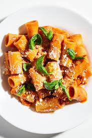

Penne alla Vodka

Description
Penne alla vodka is a pasta dish made with vodka and penne pasta, usually made with heavy cream,
crushed tomatoes, onions, and sometimes sausage, pancetta or peas.
Ingredients
- Kosher salt
- 1 medium onion
- 4 garlic cloves
- 4 oz. Parmesan cheese
- 2 Tbsp. extra-virgin olive oil, plus more for drizzling
- 1 4.5-oz. tube double-concentrated tomato paste
- ½ tsp. crushed red pepper flakes
- 2 oz. vodka
- ¾ cup heavy cream
- 1 lb. rigatoni
- Basil leaves (for serving)
Steps
- Fill a stock pot or other large pot three-quarters full with water and heat over high. Toss in a handful
of salt and bring to a boil while you do your other prep.
- Peel and finely chop 1 onion.
- Firmly smash 4 garlic cloves with the flat side of a chef’s knife and remove peel.
- Grate 4 oz. Parmesan on the smallest holes of the box grater.
- Heat 2 Tbsp. oil in a Dutch oven over medium (position it next to pot of water). Add onion and garlic and cook,
stirring constantly, just until onion is starting to brown around the edges, 5–7 minutes.
- Add entire 4.5-oz. tube tomato paste and ½ tsp. red pepper flakes and stir until paste evenly coats onion. Continue to cook, stirring often,
until paste is deep red and starting to brown on bottom of pot, 5–7 minutes.
- Add 2 oz. vodka to deglaze pan and stir to incorporate, scraping bottom of pot. Reduce heat to low.
- Using a heatproof glass measuring cup, scoop about ¼ cup boiling water from pot, then add ¾ cup heavy cream to measuring cup (this brings up
the temperature of the cream so it won’t break when you add it to the pot).
- Slowly add warmed cream to Dutch oven, stirring constantly, until a smooth sauce forms. Remove from heat.
- Add 1 lb. rigatoni to pot of boiling salted water and cook according to package instructions until al dente. About 1 minute before the timer
goes off, use heatproof measuring cup to scoop up about 1 cup pasta cooking liquid. Heat Dutch oven over low.
- Using a spider, transfer rigatoni to Dutch oven along with any water that’s piggybacking on the pasta.
- Add ½ cup pasta cooking liquid to Dutch oven and stir to incorporate, then gradually add half of Parmesan, stirring constantly to melt
cheese. You should have a smooth, glossy sauce that coats each piece of pasta. Season with salt and add a splash more pasta cooking liquid
to thin sauce, if needed.
- Divide pasta among bowls. Top with remaining cheese, dividing evenly. Drizzle with more oil, then tear basil leaves over.